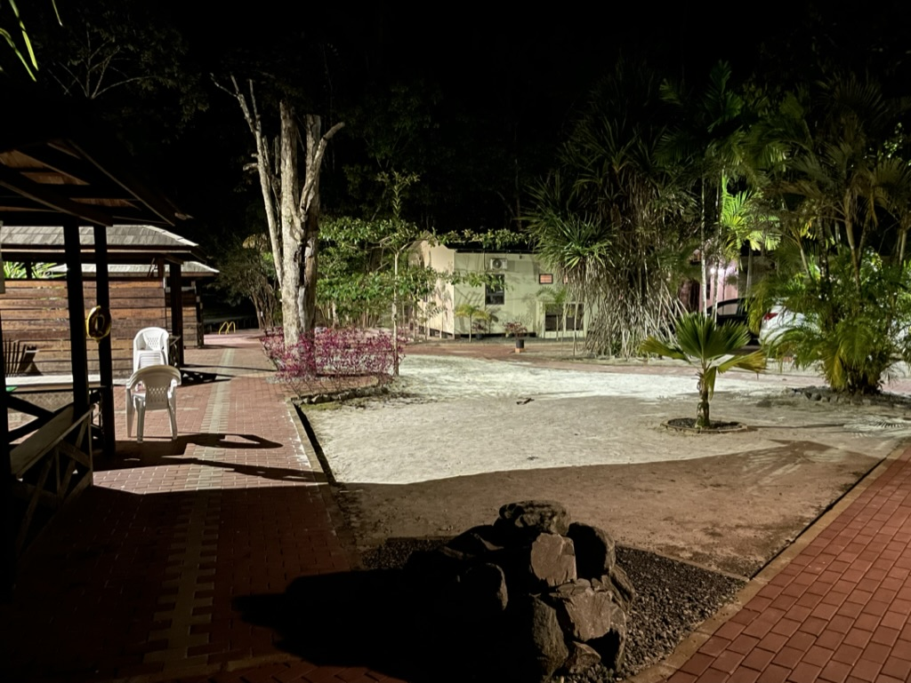
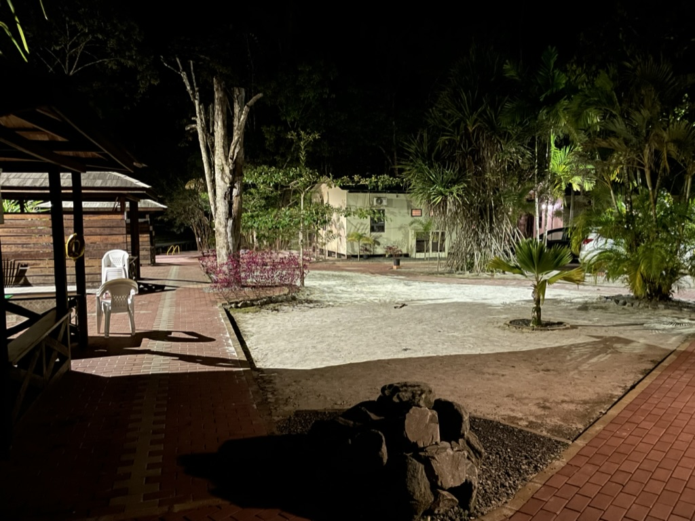

Mijn verblijf
In mijn totale verblijf hebben we op 2 verschillende locaties overnacht. 1 plek was in Paramaribo en 1 in Zanderij. Qua locatie was Zanderij een stuk mooier, omdat je echt wat meer in de natuur was en het was aan colakreek. Het enige nadeel aan deze plek is dat alles best ver weg was. Bij het verblijf in Paramaribo was alles een stuk dichterbij, omdat je midden in de stad zat. Persoonlijk vond ik het verblijf in Paramaribo een stuk leuker, want daar hadden we ook een zwembad.
 
